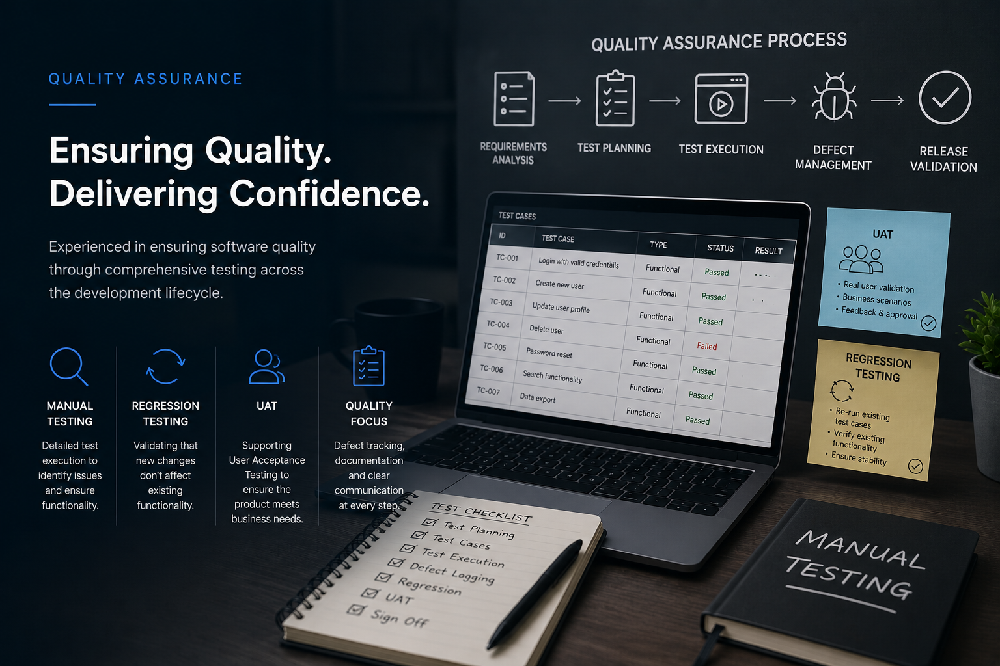

Featured work
Quality Assurance for software releases
A QA-led approach to multi-release delivery, including test planning, regression suites, and defect management.

I led quality assurance activities across multi-release delivery cycles, owning test planning, maintenance of the regression pack, test execution, and defect lifecycle management. The work combined structured regression testing, targeted feature verification, exploratory testing, and co-ordinated UAT with stakeholders.
Regression test pack (Liaison Group)
At Liaison Group regression testing was managed through an Excel-style regression test pack. This pack was the single source of truth for regression coverage across builds and contained canonical test cases, execution history, and pass/fail annotations.
- Structure: rows for each test case, columns for ID, feature area, preconditions, steps, expected result, last run date, result (Pass/Fail/Blocked), tester notes, and linked Azure DevOps work item ID where required.
- Maintenance: I kept the pack current after each sprint—adding new test cases for features, flagging flaky cases, and retiring obsolete scenarios.
- Execution: test runs were recorded in the sheet during cycles, with evidence links (screenshots / logs) and notes captured for reproducibility and regression trend analysis.
Test execution & Azure DevOps
Test execution was coordinated via the regression pack and tracked as work items in Azure DevOps for traceability. Defects were filed with detailed repro steps, environment, severity, and linked back to the test case ID in the Excel pack.
- Defect lifecycle: Create → Triage (with dev and product) → Assign → Fix verification → Close. I owned triage sessions and assisted the product owners to prioritize fixes based on business impact and release risk.
- Traceability: Each defect linked to the related Azure DevOps user story/PR and the regression test case ID so we could prove coverage for release notes and audits.
Feature testing & exploratory
For new features I created focused test charters and performed exploratory testing across adjacent areas to uncover integration regressions not covered by scripted cases.
- Charters: short, mission-led sessions (e.g., "verify timesheet calculations are correct with multiple shift times") with time-boxed exploration and note capture.
- Boundary checks: I deliberately tested surrounding modules (related UI, APIs, data import/export flows) to catch cross-cutting defects.
- Session notes: documented findings, severity, and reproduction steps; converted serious findings into Azure DevOps bugs immediately.
UAT & stakeholder coordination
I ran and coordinated UAT cycles with product owners and operational stakeholders, preparing test scenarios that mirrored real-world workflows used by NHS customers.
- Test packs for UAT: trimmed, user-focused scenarios with acceptance criteria and clear pass/fail definitions for stakeholder sign-off.
- Sign-off process: tracked UAT outcomes in Azure DevOps, captured stakeholder approval, and recorded any post-UAT actions as backlog items.
- Training & handover: supplied runbooks and known-issues lists to operations to ease release rollout.
Metrics & outcomes
- Maintained regression pass-rates per build and reported trendlines to the team.
- Reduced post-release defects by capturing integration regressions early via the Excel pack.
- Faster triage and resolution due to precise reproduction steps and direct links between tests, defects and work items.